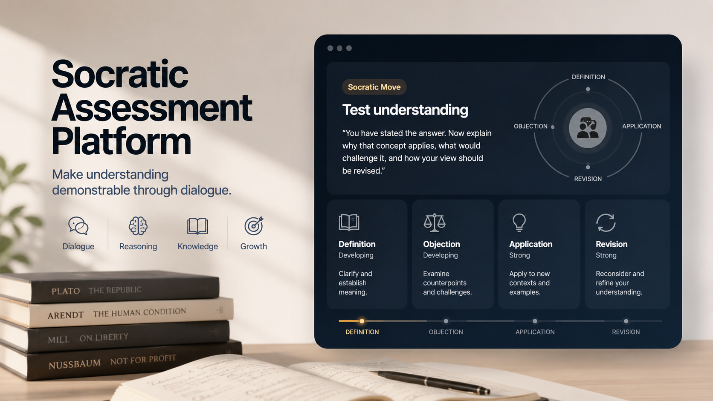

Flagship Higher-Education Initiative
Socratic Institutional Pilot
Educational intelligence for higher education. A public, institution-facing demonstration of how curriculum intelligence, structured knowledge, Socratic assessment, critical listening, faculty review, and responsible AI governance can operate as one coherent system.

Educator Behind the Platform
Built from direct experience in teaching, reasoning, and educational technology.
I am Benjamin A. Moss, MA, an Associate Professor of Philosophy, author, and independent educational-technology developer. My work bridges applied ethics, critical thinking, AI literacy, online learning, and human-centered software design.
The Socratic Institutional Pilot grows from a practical educational question: how can institutions use artificial intelligence to make student reasoning more visible without replacing faculty judgment, responsibility, or meaningful dialogue?
Read more about my work →Integrated Educational Intelligence
One institutional demonstration, six connected capabilities.
The flagship is broader than a single assessment tool. It demonstrates how course context, structured knowledge, student dialogue, evidence gathering, and faculty governance can work together.
Curriculum Intelligence
Course-aligned concepts, outcomes, activities, and assessment context organized for meaningful instructional use.
Knowledge Packs
Structured, adaptable knowledge resources that ground dialogue and evaluation in instructor-approved content.
Socratic Assessment
Guided questioning that asks learners to define, distinguish, justify, apply, answer objections, and revise.
Critical Listening
Tools that help learners and faculty identify claims, assumptions, evidence, implications, and interpretive choices.
Faculty Governance
Human oversight, transparent limits, privacy controls, and instructor authority over educational decisions.
Evidence Portfolios
Reviewable records of reasoning, conceptual growth, transfer, application, objections, and revision.
Signature Capability
Socratic assessment asks students to show their thinking.
A polished written answer can conceal uncertainty, imitation, or shallow understanding. Structured dialogue gives learners opportunities to clarify, justify, apply, defend, and revise their ideas.
The platform does not claim to determine authorship or misconduct. It produces reasoning evidence for instructor interpretation and follow-up.
Evidence sequence
- Claim and definition
- Conceptual distinction
- Reason and justification
- Application and transfer
- Objection and response
- Revision and reflection
Faculty & Institutional Pilot
Seeking thoughtful partners for limited, low-stakes evaluation.
A pilot can begin with one instructor, one course, and one formative assessment. The goal is to evaluate whether structured dialogue and integrated evidence can support more meaningful demonstrations of student understanding.
Faculty remain responsible for interpretation and evaluation. The system is presented as an educator-led research and design initiative, not an autonomous grading or misconduct-detection service.
A pilot may examine
- Quality and usefulness of reasoning evidence
- Instructor workload and decision support
- Student experience and perceived fairness
- Revision, transfer, and conceptual growth
- Privacy, accessibility, and governance needs
Supporting Research & Product Ecosystem
Related work in reasoning, learning, and human-centered AI.
These projects support the broader research program. The Socratic Institutional Pilot is the central public-facing initiative, while the Socratic Assessment Platform is its signature assessment capability.
Signature Capability
Socratic Assessment Platform
Structured dialogue that makes definitions, reasons, applications, objections, and revisions visible for faculty review.
View project summaryPrivate Core Research
Socratic Reasoning Engine
The underlying dialogue architecture for clarification, counterargument, conceptual refinement, and inquiry.
View project summaryInstitutional Module
Critical Listening Assistant
A tool for identifying assumptions, distinguishing claims from evidence, and interpreting arguments carefully.
View project summaryLearning Platform
Logos Learning Academy
A broader environment for critical thinking, philosophy, reading, writing, and guided inquiry.
View project summaryFaculty Tool
Speed Grader
An instructor-focused assistant for efficient feedback while preserving faculty oversight and judgment.
View project summaryPrivate AI Workspace
Logos AI
A local-first workspace for thinking, research, writing, documents, voice, and private knowledge management.
View project summaryAbout Benjamin
Scholar, educator, author, and builder.
My professional work combines higher-education teaching, curriculum and learning design, applied ethics, AI literacy, and independent software development. I design tools and learning experiences that help people evaluate evidence, clarify assumptions, reason through difficult questions, and use AI thoughtfully.
This website remains both a professional portfolio and the public home of the Socratic Institutional Pilot.
Core themes
- Socratic pedagogy and formative assessment
- Critical thinking and intellectual responsibility
- AI literacy and responsible technology use
- Applied ethics and human flourishing
- Human-centered learning and software design
Research Vision
Reasoning, judgment, and humane technology.
Across my scholarship and software projects, I investigate how philosophy, education, and artificial intelligence can work together to cultivate better reasoning rather than automate it away.
Socratic Pedagogy
Dialogue, clarification, objection, and revision as evidence of understanding.
Human-Centered AI
Tools that augment judgment, reflection, and responsibility.
Educational Technology
Learning environments that support reasoning, feedback, accessibility, and growth.
AI Ethics
Privacy, transparency, governance, and the moral limits of automation.
Books & Publications
Writing on critical thinking, AI, and philosophy education.
New 2026
Critical Thinking in the Age of AI
A book on reasoning, questioning, bias, misinformation, algorithmic influence, and the outsourcing of judgment.
View on AmazonCritical Thinking: Unleashing the Power of Reason
A framework for intellectual virtues, logical reasoning, cognitive bias, the Socratic Method, and reflective thought.
View on AmazonContact
Discuss a faculty pilot or collaboration.
For pilot conversations, educational research, teaching, software collaboration, or professional inquiries, connect through LinkedIn or GitHub.